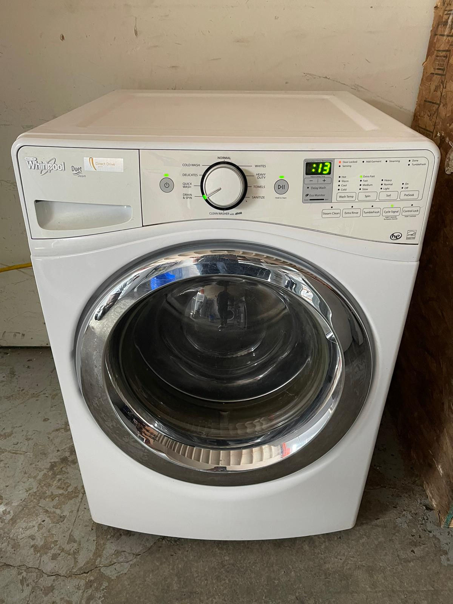

What Qualifies for Free Pickup?
Free pickup is available for qualifying fully working appliances, or mixed loads where approximately 80% of the appliances work. Minor repairs may be considered. A nonworking appliance by itself does not qualify for free pickup.
Dishwashers are considered only with two or more major working appliances. Microwaves are accepted only with another qualifying major appliance.
Send the appliance condition, city or ZIP code, photos and access details. Pickup must be confirmed based on the load, location, access and available coverage before scheduling.
Inland Empire Appliance Pickup & Removal
We review qualifying washers, dryers, refrigerators, stoves, ranges, ovens and freezers across Inland Empire.
Cities and Communities We Cover
What to Include
Condition
Fully working, needs repair, not working or unknown.
Location
City, ZIP code and pickup address.
Access
Floor level, stairs, tight halls, gates or door-removal issues.
Photos
Photos help review the appliance and access when available.
Appliances We Review
Washers, dryers and laundry sets are priority categories. We also review refrigerators, freezers, stoves, ranges and ovens.
Inland Empire Appliance Pickup Coverage
The Inland Empire service region includes major communities across western San Bernardino County and nearby Riverside County. Requests are reviewed from Rancho Cucamonga, Fontana, Upland, Ontario, Montclair, Chino, Chino Hills, Pomona, Claremont, Rialto, San Bernardino, Riverside, Jurupa Valley and surrounding communities when route coverage is available.
This regional page helps customers who are not sure which county or city page fits their location. For more specific coverage, use the San Bernardino County pickup page or Riverside County pickup page.
Priority appliances in the Inland Empire
Working washers, dryers and complete laundry sets receive strong priority. Reusable refrigerators, freezers, stoves and ranges are also reviewed. For refrigerators and freezers, tell us whether the appliance is plugged in and cooling. For laundry equipment, describe whether the washer fills, drains and spins and whether the dryer tumbles and heats.
What helps us review your request
Send clear appliance photos, your city or ZIP code, working condition, floor level and access details. Tell us about stairs, narrow halls, gates, tight doorways or appliances located in a garage, driveway or outside. Complete details help us decide whether the load qualifies and whether a route is available.
How appliance pickup works · What qualifies for free pickup · About & Contact
Planning an Inland Empire Appliance Pickup
For Fontana, Rancho Cucamonga, Ontario, Upland, Chino and nearby requests, include the city and ZIP code with your appliance photos. We review the complete load and available route before confirming a pickup time.
For garage or driveway pickup, tell us whether the vehicle can reach the appliance and whether there are gates, slopes or steps along the route. If the appliance is still inside, include the floor level and any narrow laundry-room or kitchen doorway.
Replacing appliances across several rental units? Give the condition and location of each item, and tell us whether the appliances will be together or in separate units. Use the county pages above for more specific Riverside and San Bernardino coverage.
Call or text 909-375-6685, Monday through Sunday, 8:00 AM–8:00 PM. We review the appliance load, access and coverage before confirming a pickup time.
Real Appliance Example
